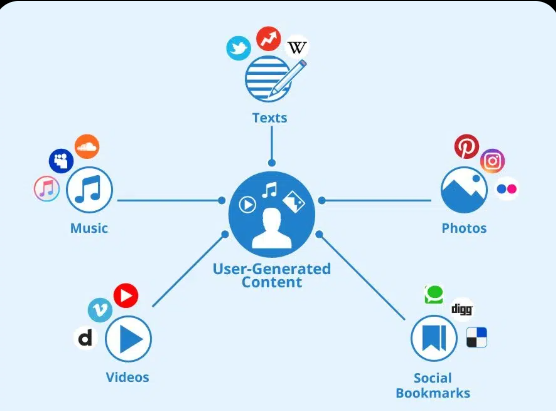

Web 2.0 is the internet most of us grew up with. It's where users stopped just reading and started creating — posting, commenting, liking, sharing. Social media, YouTube, Wikipedia, online shopping — all of that is Web 2.0. The big shift was that anyone could now put content on the web, not just developers.

Unlike Web 1.0, Web 2.0 sites have accounts. You create a profile and the site remembers who you are and personalises your experience.
Anyone can post a photo, write a blog, upload a video, or leave a review. Content is no longer controlled by one developer — it comes from millions of users.
Web 2.0 uses technologies like JavaScript and AJAX so pages update without refreshing. Your feed loads new posts automatically without you doing anything.
Platforms collect your activity — what you click, like, and search — to serve you targeted ads and personalised content. That's how they make money.
Web 2.0 completely changed how people use the internet. It gave rise to billion-dollar companies like Facebook, YouTube, Twitter, and Instagram — all built on the idea that users are the content. It also introduced cloud computing, APIs, and mobile web, making the internet something you carry in your pocket every day.